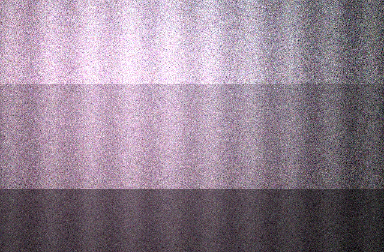
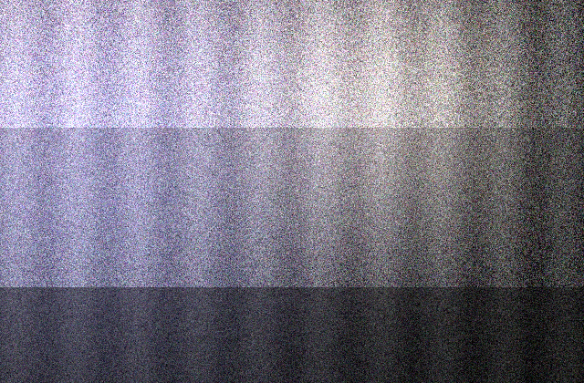

A controlled page with human-made and synthetic text, images, and video. Install the
RealView extension, then scroll to see cross-media filtering.
Notes from the bike shop on Mass Ave
I biked over on Saturday because my rear derailleur had been skipping for a week and
I was tired of guessing. The mechanic, who I think is named Dev, spun the wheel once,
made a face, and told me the hanger was bent. Ten minutes and a bent-hanger tool
later it shifted clean. He charged me nothing, which felt wrong, so I bought a tube I
did not need and a coffee from next door. Honestly the whole thing took less time
than my last attempt at truing a wheel in my kitchen, which ended with a spoke in the
radiator and a lot of swearing that my roommate still brings up.

The Transformative Role of Urban Cycling Infrastructure
In today's fast-paced urban environment, cycling infrastructure plays a crucial role
in fostering sustainable mobility. Moreover, it is important to note that protected
bicycle lanes deliver measurable benefits to riders and pedestrians alike.
Additionally, municipalities that leverage a holistic approach to transportation
planning can unlock the potential of their existing roadways. Furthermore, a robust
framework for evaluating network connectivity enables planners to navigate the
complexities of modern mobility. In conclusion, the landscape of urban transportation
continues to evolve, and cycling infrastructure remains a testament to thoughtful
civic design that seamlessly integrates with broader community objectives.
Two clips from the same block
One of these was recorded on a phone, the other was produced by a video model. Try
the pause and warning treatments on each.
Handheld phone clipGenerated clip
Comprehensive Insights Into Modern Kitchen Workflows
When it comes to modern kitchen workflows, it is important to note that efficiency
and ergonomics are deeply interconnected. Furthermore, the landscape of residential
design continues to evolve as homeowners leverage new appliances. Additionally,
professionals emphasize that a holistic approach to spatial planning can foster a
sense of calm. Moreover, a robust framework for organizing utensils plays a crucial
role in reducing preparation time. In conclusion, thoughtful design remains a
testament to the enduring value of intentional living spaces.

What I actually cooked
Rice, eggs, whatever was left in the crisper drawer. The onion had gone a bit soft
and I used it anyway. My smoke alarm went off, which it does roughly every third time
I turn the burner past medium, and the neighbor knocked to ask if everything was
fine. It was fine. The eggs were not, but the rice held it together and I ate the
whole pan standing at the counter while reading a thread about why nobody should
store knives in a drawer.
Privacy check
This comment box is excluded from scanning. RealView skips inputs, textareas, and
editable regions so it never reads what you type.